Clutch Replacement
1. On models equipped with radio coded theft protection system, refer to Vehicle Damage Warnings for system disarming and arming procedures. On models equipped with airbag system, refer to Technician Safety Information for system disarming and arming procedures.
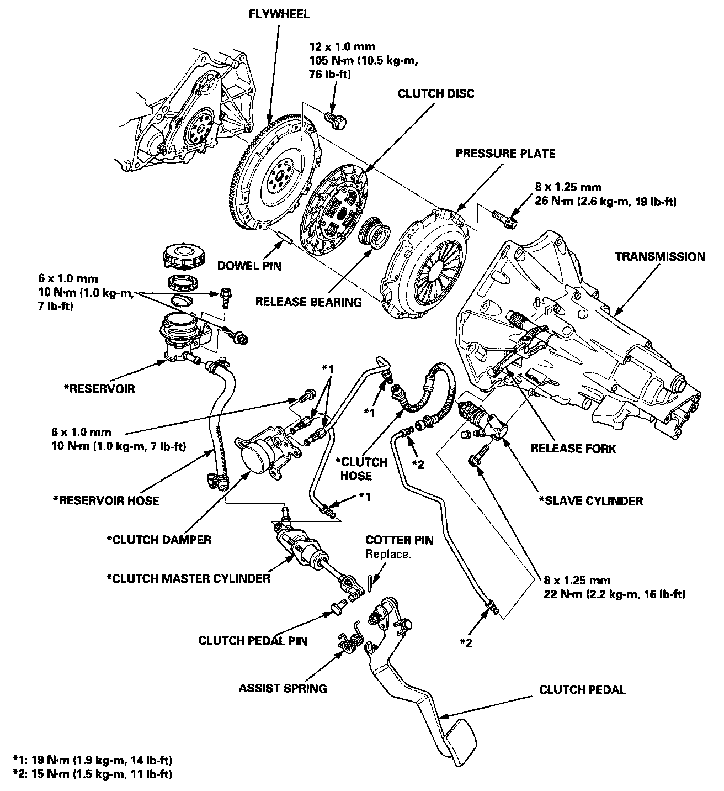
NOTE:
- Whenever the transmission is removed, clean and grease the release bearing sliding surface.
- If the parts marked * are removed, the clutch hydraulic system must be bled.
- Inspect the hoses for damage, leaks, interference, and twisting.
- 5-speed is shown.
2. Separate transaxle from engine block. Refer to Manual Transmission/Transaxle for procedures. Service and Repair
3. Remove special 8 mm bolt, then the release shaft and bearing assembly.
4. Separate release fork from bearing by removing release fork spring from holes in release bearing.
5. Remove pressure plate mounting bolts. Turn bolts two turns at a time in a crisscross pattern.
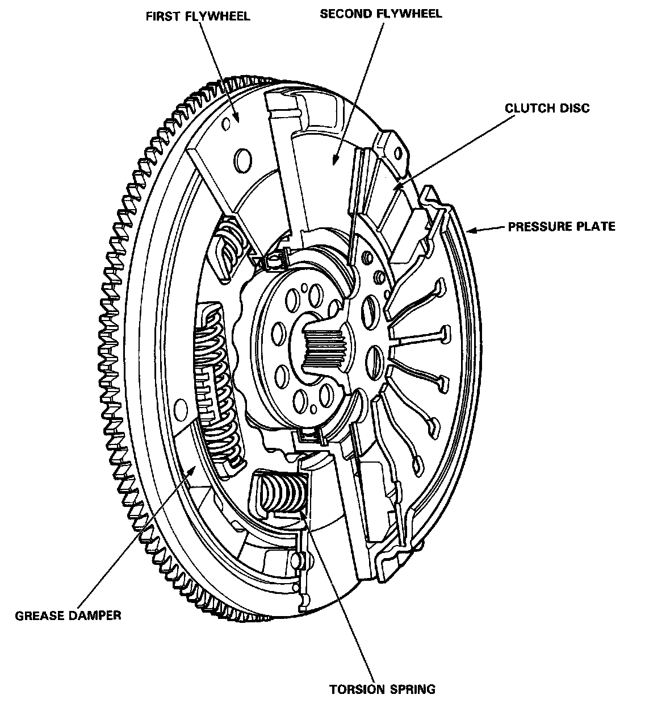
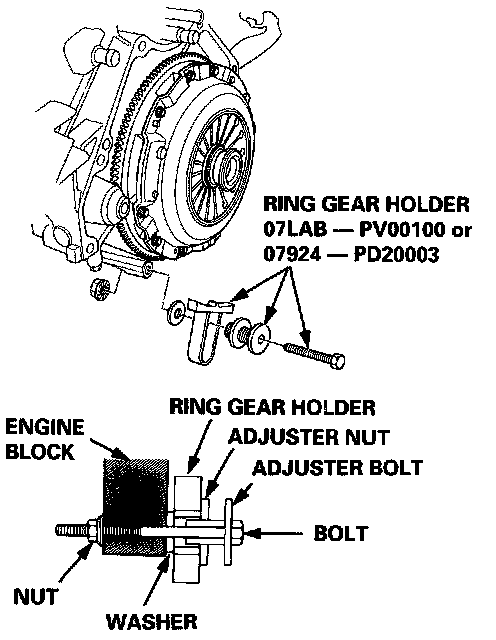
Removal
1. Install the special tools as shown.
2. To prevent warping, unscrew the pressure plate mounting bolts in a crisscross pattern in several steps, then remove the pressure plate and the clutch disc.
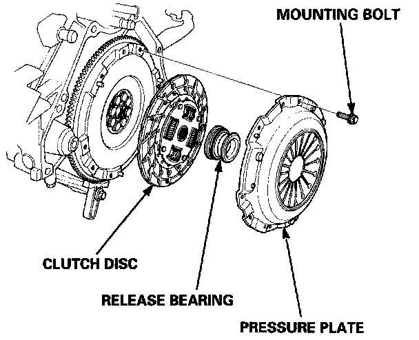
3. Remove the release bearing from the pressure plate.
Removal
1. Remove pressure plate and clutch disc.
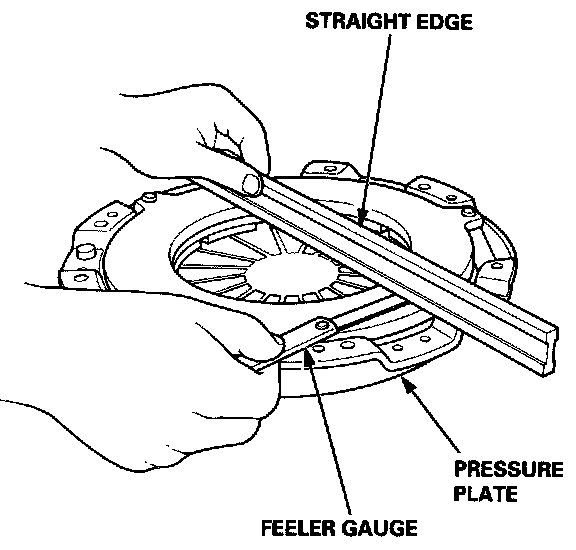
Pressure Plate Inspection
1. Inspect pressure plate surface for wear, cracks or burning.
2. Inspect pressure plate for warpage. Warpage must be less than 0.006 inches.
NOTE: Measure across the pressure plate at three points.
Standard (New): 0.03 mm (0.0O1 in) max.
Service Limit: 0.15 mm (0.006 in
Clutch Disc Inspection
1. Inspect the lining of the clutch disc for signs of slippage and oil. If the clutch disc is burned black or oil soaked, replace it.
2. Measure clutch disc thickness. Minimum thickness is 0.26 inch.
3. Check for loose rubber torsion dampers. Replace disc if any are loose.
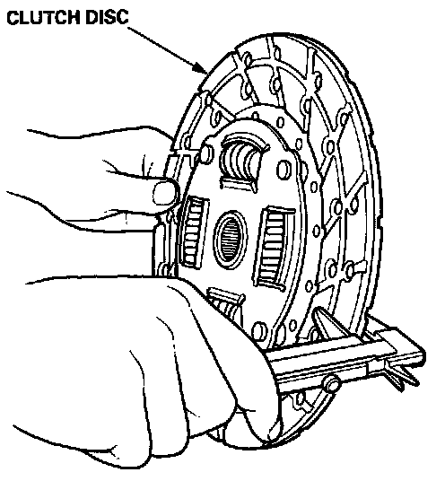
4. Measure the clutch disc thickness.
5-Speed:
Standard (New): 9.6 - 10.3 mm (0.38 -0.41 in)
Service Limit: 6.8 mm (0.27 in)
6-Speed:
Standard (New): 8.5 - 9.1 mm (0.33- 0.36 in)
Service Limit: 5.7 mm (0.22 in)
- If the thickness is less than the service limit, replace the clutch disc
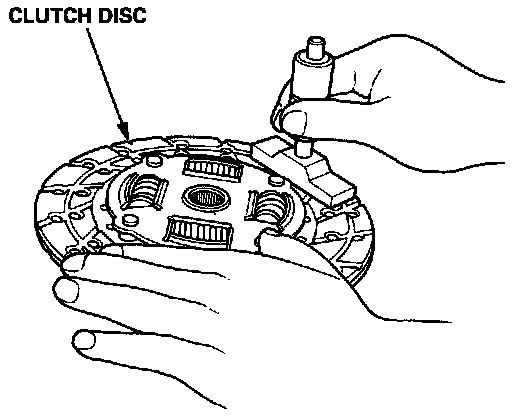
Clutch Disc
1. Measure the rivet depth from the lining surface to the rivets, on both sides.
5-Speed:
Standard (New): 1.5 mm (0.06 in) mm.
Service Limit: 0.5 mm (0.02 in)
6-Speed:
Standard (New): 1.3 - 1.9 mm (0.05-0.07 in)
Service Limit: 0.2 mm (0.008 in)
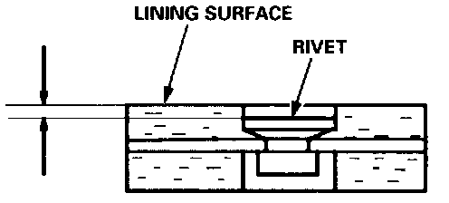
- If the rivet depth is less than the service limit, replace the clutch disc.
2. Using dial indicator, measure flywheel runout. Push against flywheel each time turned to take up crankshaft thrust washer clearance. Runout must be less than 0.006 inch.
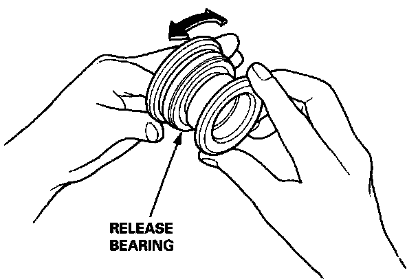
Release Bearing Inspection
1. Check the release bearing for excessive play by spinning it by hand.
2. If there is excessive play, replace the release bearing with a new one.
Flywheel, Ball Bearing Inspection
1. Inspect the ring gear teeth for wear and damage.
2. Inspect the clutch disc mating surface on the flywheel for wear, cracks, and burning.
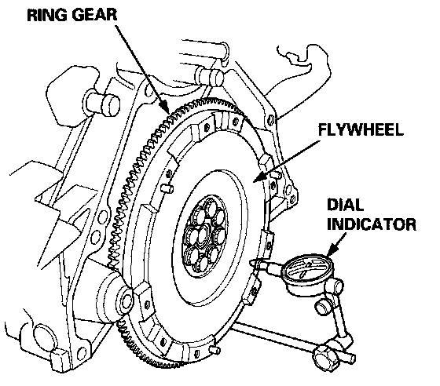
3. Measure the flywheel runout using a dial indicator through at least two full turns. Push against the flywheel each time you turn it to take up the crankshaft thrust washer clearance.
NOTE: The runout can be measured with the engine installed.
Standard (New): 0.05 mm (0.002 in) max.
Service Limit: 0.15 mm (0.006 in)
- If the runout is more than the service limit, replace the flywheel and recheck the runout.
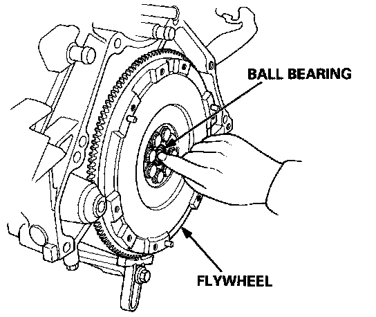
4. Turn the inner race of the ball bearing with your finger. The ball bearing should turn smoothly and quietly. Check that the ball bearing outer race fits tightly in the flywheel. Replace the ball bearing if the inner race does not turn smoothly, quietly, and fit tightly in the flywheel.
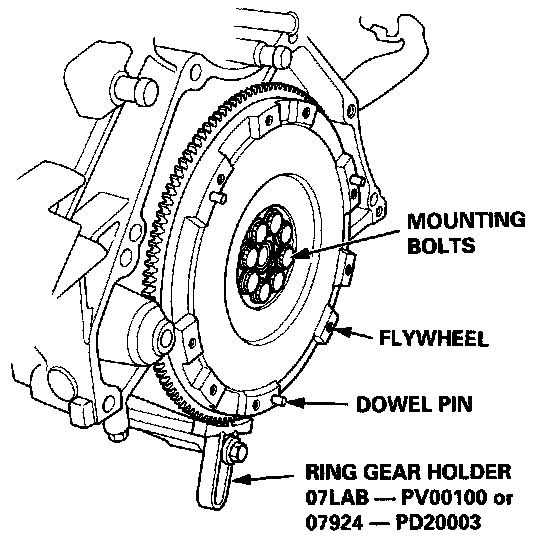
Replacement
1. Install the special tool as shown.
2. Remove the flywheel mounting bolts in a crisscross pattern in several steps, and remove the flywheel.
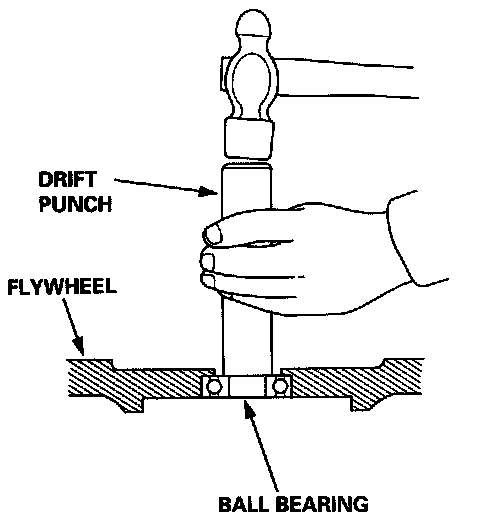
3. Remove the ball bearing from the flywheel.
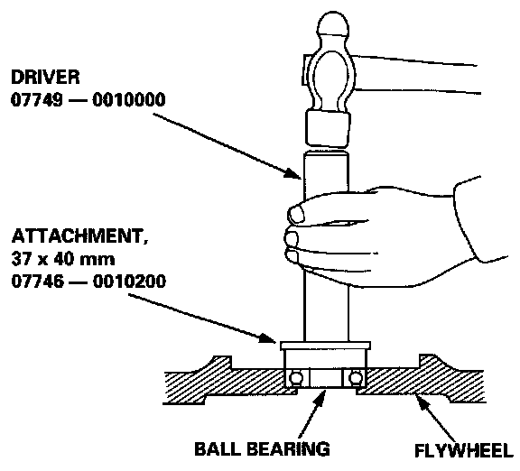
4. Drive the new ball bearing into the flywheel using the special tools as shown.
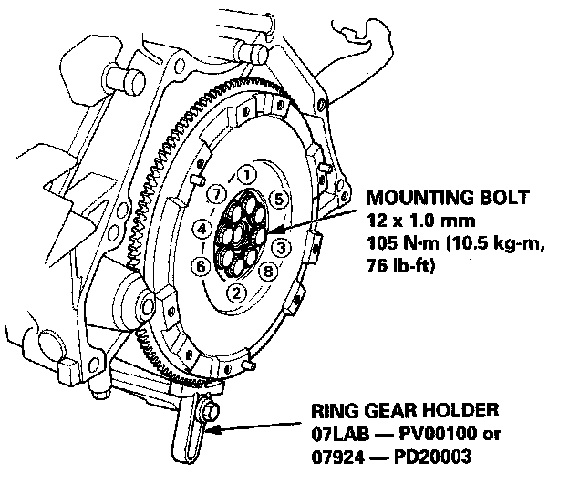
5. Align hole in flywheel with crankshaft dowel pin and install flywheel, then install attaching bolts finger tight.
6. Install the special tool, then torque the flywheel mounting bolts in a crisscross pattern in several steps as shown.
Installation
NOTE: Use only Super High Temp Urea Grease (P/N 08798-9002).
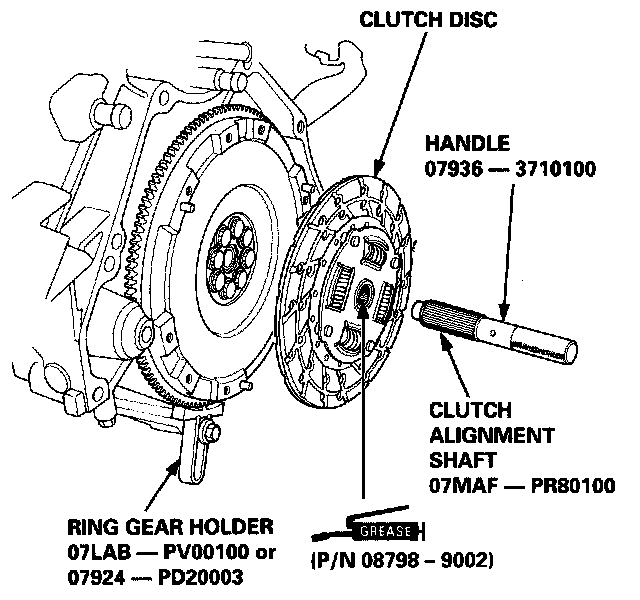
1. Install the ring gear holder.
2. Apply grease to the splines of the clutch disc, and install the clutch disc using the special tools as shown.
3. Install the release bearing on the pressure plate.
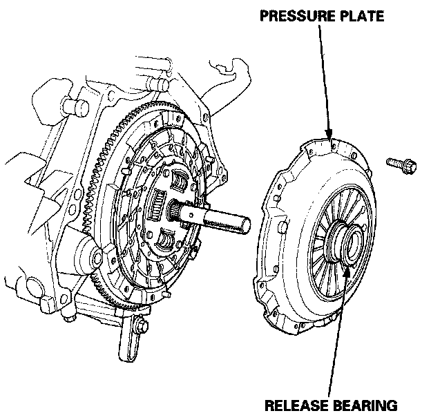
4. Install the pressure plate.
NOTE: After installing the pressure plate, make sure the release bearing does not come off.
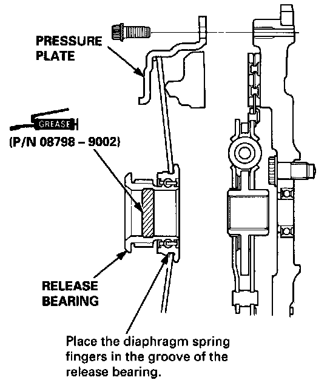
5. Torque the mounting bolts in a crisscross pattern as shown. Tighten the bolts in several steps to prevent warping the diaphragm spring.
NOTE: After installing the pressure plate, make sure the release bearing does not come off.
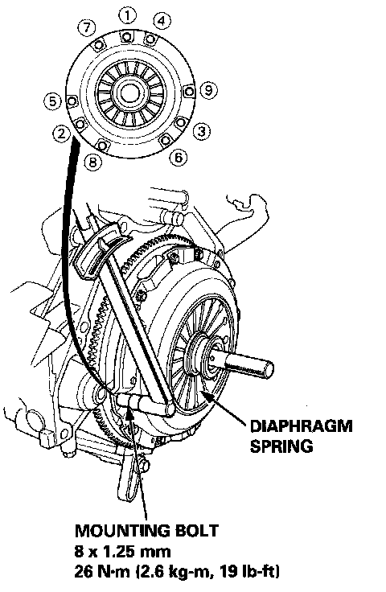
6. Remove the special tools.
7. Check the diaphragm spring fingers for height (see pressure plate inspection above).
8. Install transaxle.